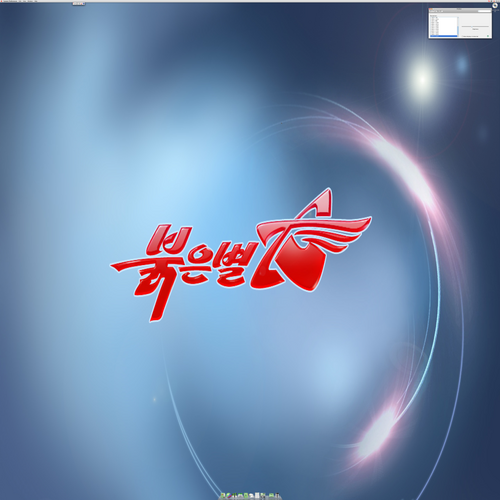
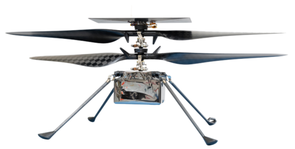
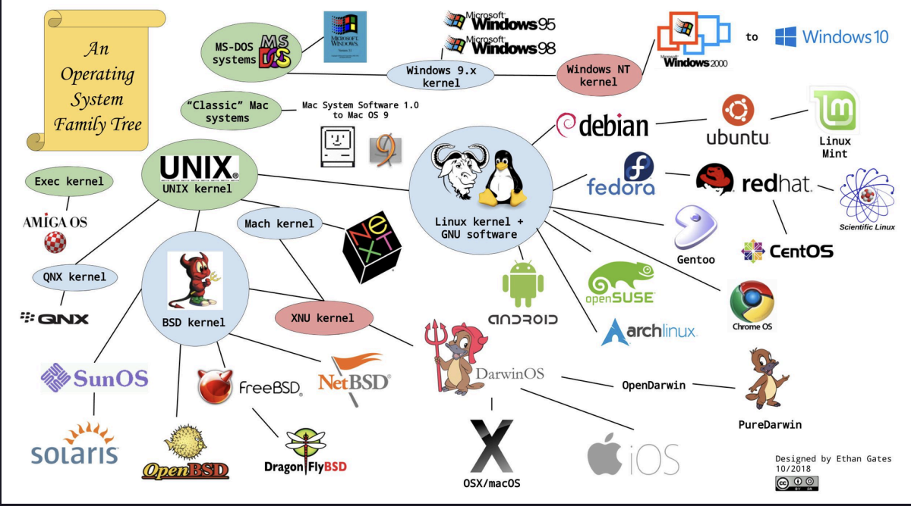
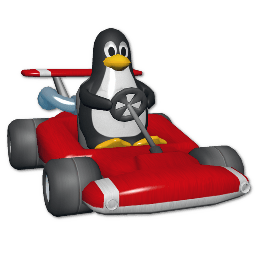

PewDiePie
Se pasó a Linux
Se pasó a Linux


No es un sistema operativo, es un kernel.
El software que gestiona los recursos:
Windows, macOS, Android y Ubuntu son sistemas operativos.
Es el núcleo del sistema operativo: la única parte que le habla directo al hardware.
Están implementadas sobre el kernel de Linux, cada una tiene su propio enfoque y filosofía.
Nombramos algunas?



Un sistema que se comporta como Unix, aunque no comparta una línea de su código.
Para la próxima clase traten de tener una de las opciones funcionando!
Vuelvo a repetir, si tienen macOS van a poder seguir las clases perfectamente.